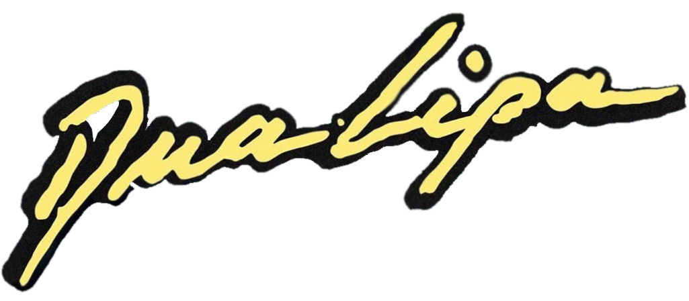
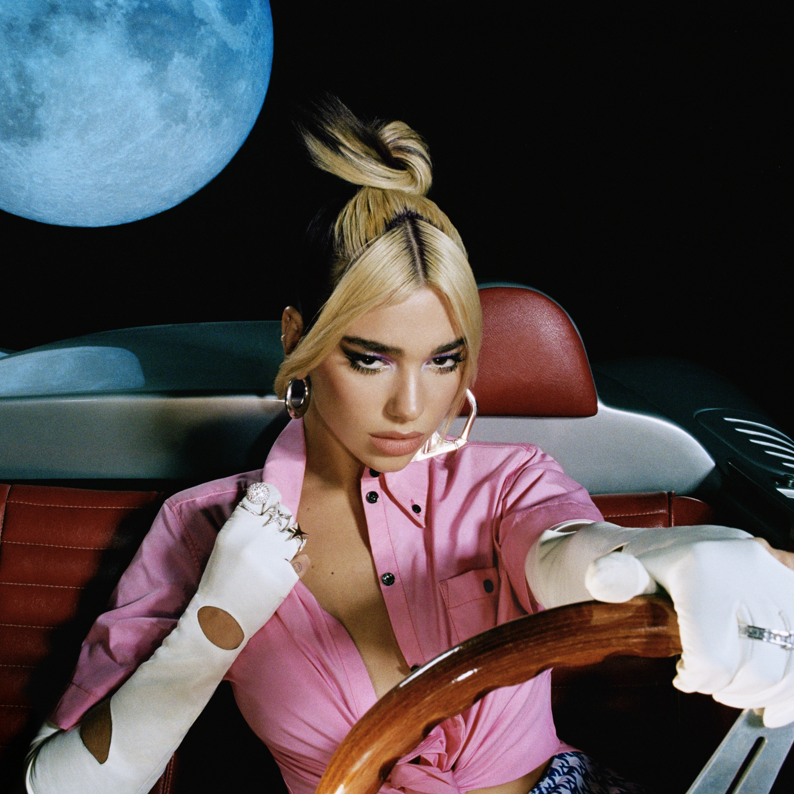
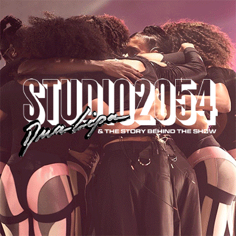
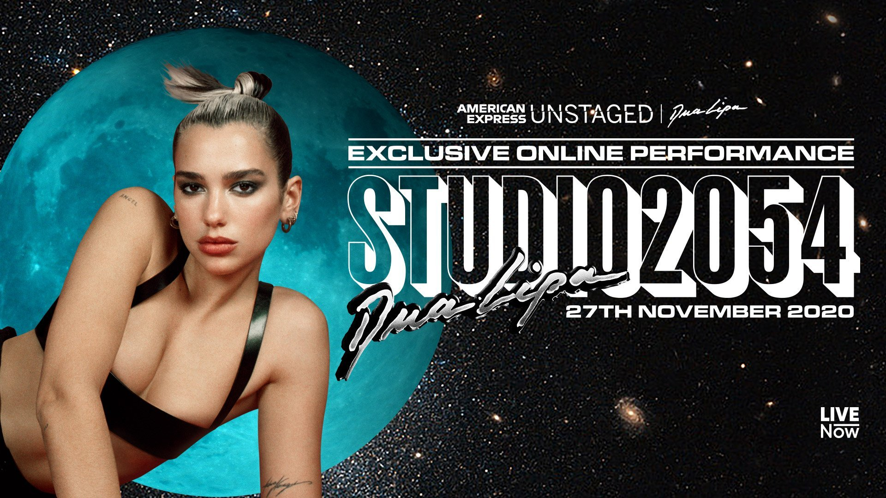

Dua Lipa — британская певица, автор песен и модель. 2 июня 2017 года состоялся релиз её одноимённого дебютного альбома.
Future Nostalgia — второй студийный альбом британской певицы Дуа Липы, вышедший 27 марта 2020 года.


